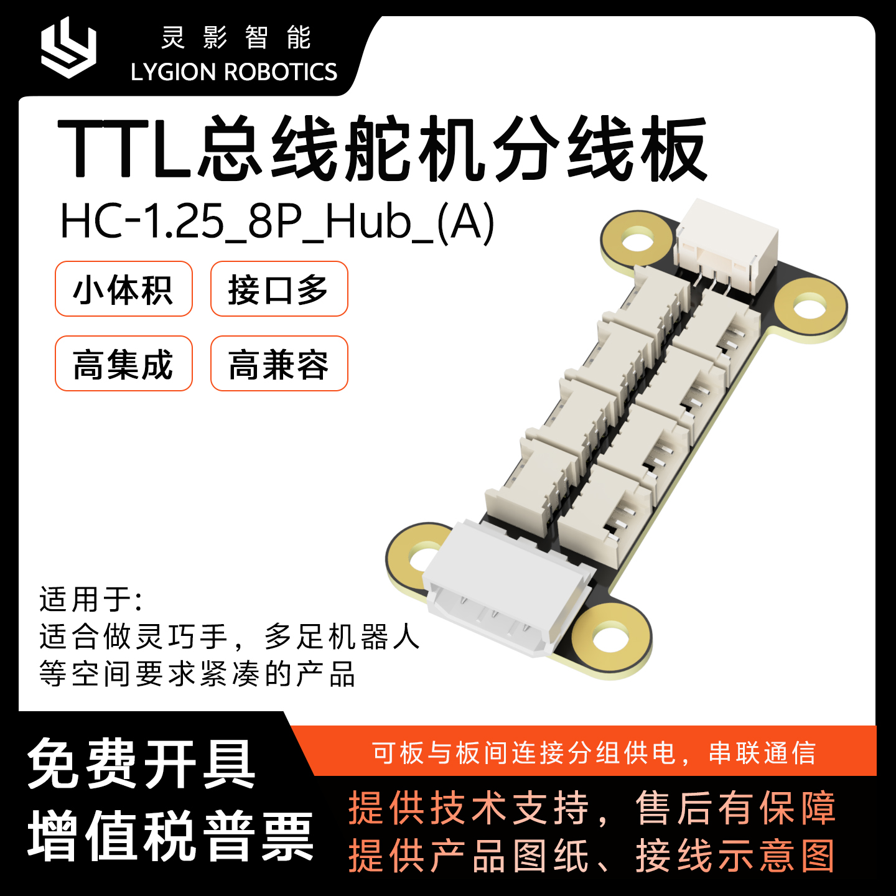
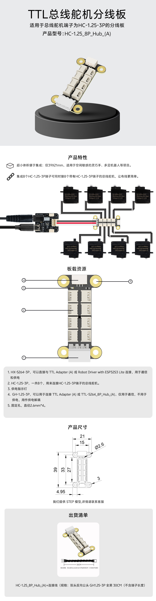
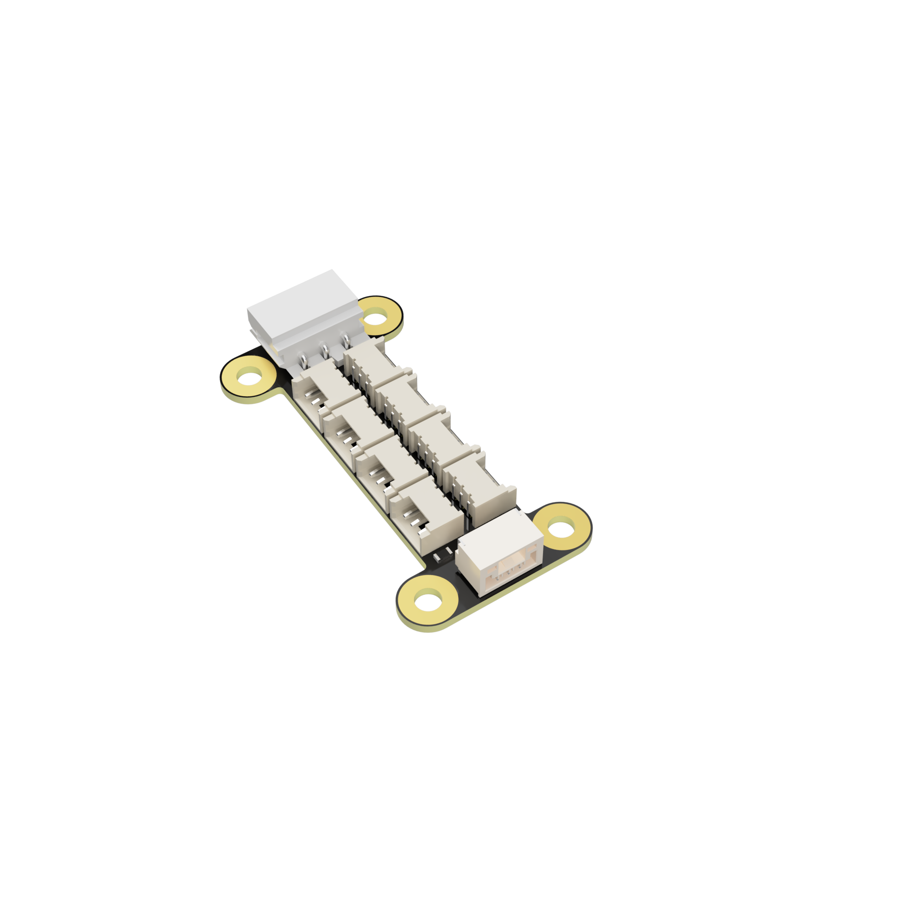
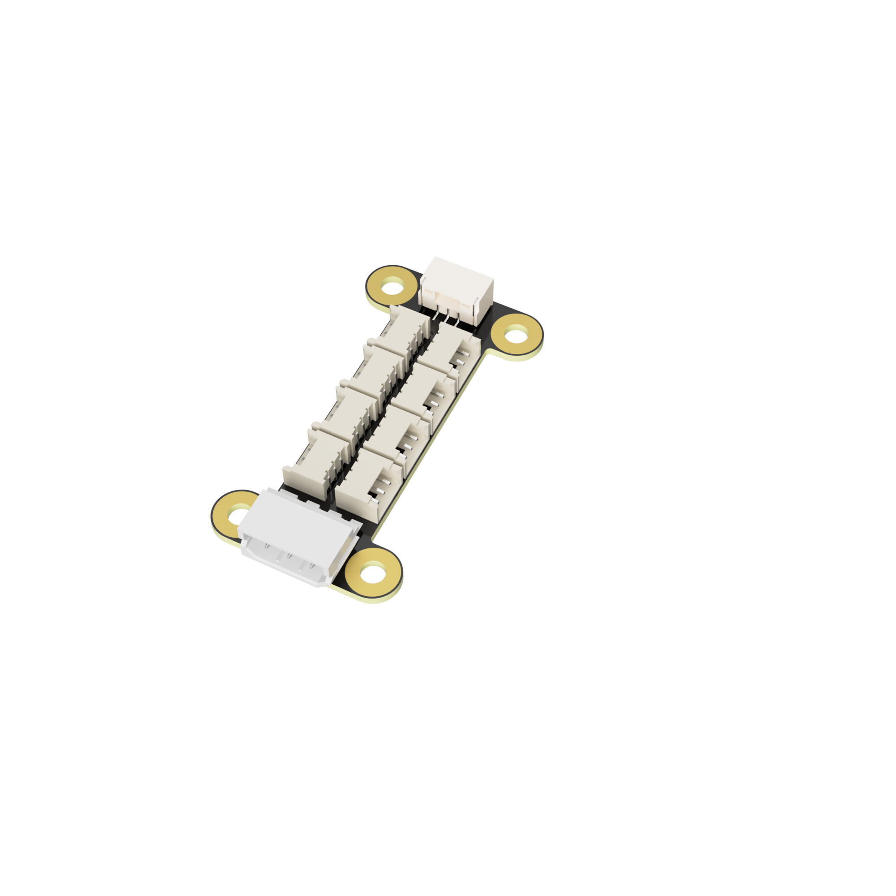
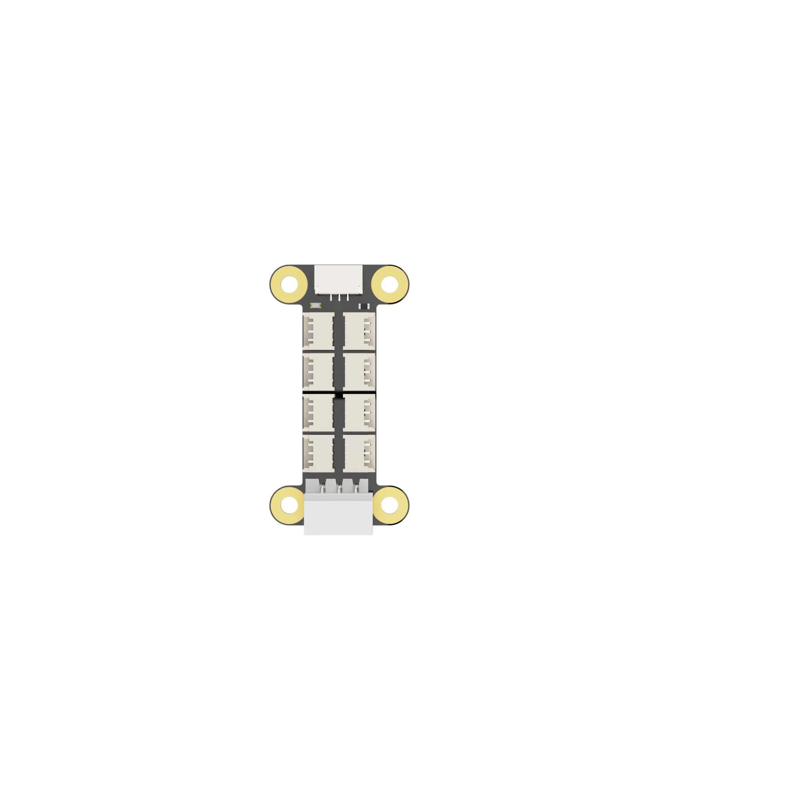
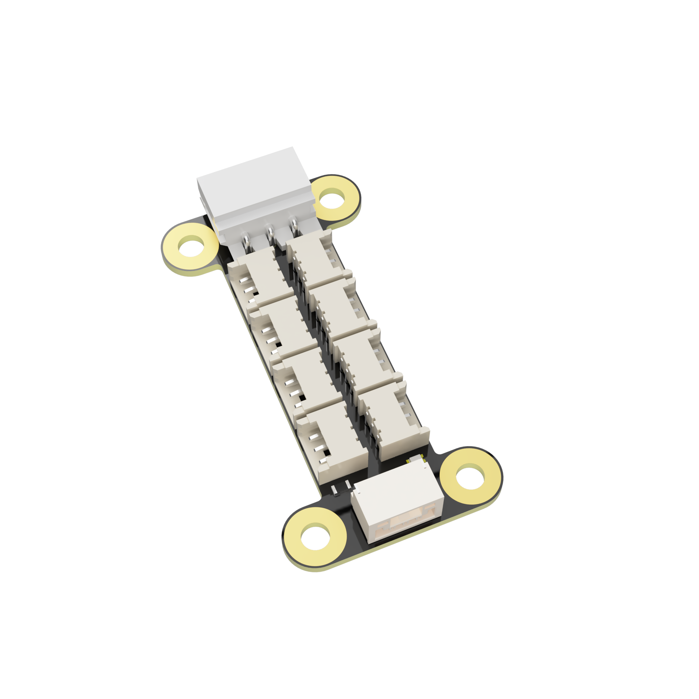

细长小体积板型
板身宽度和长度都控制在紧凑范围内，安装孔直接布置在四角，便于塞进手爪、关节模组或狭窄舱体内做固定。
TTL bus servo hub board
把一组总线舵机更紧凑地接入控制系统。HC-1.25_8P_Hub_(A) 面向端子为 HC-1.25-3P 的总线舵机，提供 8 路并联输出、板对板通信与供电接入，以及适合狭小空间安装的细长板型结构。
Wiki 链接暂时保留占位；页面内容仅整理当前资料包和既有详情素材中可直接确认的信息。

产品优势
现有详情素材给出的定位非常明确：这不是通用转接板，而是一块围绕 HC-1.25-3P 总线舵机做高密度接线整理的小尺寸 Hub。它更适合灵巧手、多足机器人和其他空间要求紧凑的集成项目。
板身宽度和长度都控制在紧凑范围内，安装孔直接布置在四角，便于塞进手爪、关节模组或狭窄舱体内做固定。
板载 8 个 HC-1.25-3P 端口，用于同时连接 8 个带 HC-1.25-3P 端子的总线舵机，减少外部分线束和二次焊接。
HX-5264-3P 上游接口可直接与 TTL Adapter (A) 或 Robot Driver with ESP32S3 Lite 连接，承担通信与供电接入。
额外提供 1 路 GH1.25-3P 接口，可连接 TTL Adapter (A) 或 TTL-5264_8P_Hub_(A) 做通信扩展，但该接口不承担供电。
主图素材明确标注其适合做板与板之间的连接分组供电、串联通信，方便把多组舵机拆成更易布线的子系统。
资料中提供尺寸图，详情图注明可提供 STEP 模型；对需要提前规划安装空间和固定结构的项目更友好。

接口接线
详情素材已经把主要接口用途说明清楚，页面这里将它整理为可检索文本，方便后续直接用于选型、接线确认和集成文档引用。
应用场景
这款分线板的卖点不在“更多功能”，而在于把多路总线舵机接线整理得更干净、更短、更容易固定。对需要将多个舵机塞进有限体积里的产品，收益会比普通线束分叉更直接。

技术参数
| 产品型号 | HC-1.25_8P_Hub_(A) |
|---|---|
| 产品类型 | TTL 总线舵机分线板 |
| 适配对象 | 端子为 HC-1.25-3P 的总线舵机 |
| 上游接口 | HX-5264-3P x1，可连接 TTL Adapter (A) 或 Robot Driver with ESP32S3 Lite，用于通信和供电 |
| 下游接口 | HC-1.25-3P x8，用于连接总线舵机 |
| 扩展通信接口 | GH1.25-3P x1，可连接 TTL Adapter (A) 或 TTL-5264_8P_Hub_(A)，仅通信不供电 |
| 状态指示 | 板载供电指示灯 |
| 固定孔 | 4 个，孔径 Φ2.6 mm |
| 外形尺寸 | 长 39 mm，宽 21 mm；中段宽 15 mm；内侧长度标注 33 mm；接口区域长度标注 27 mm；底部局部标注 4.95 mm；局部厚度/边距标注 3 mm |
| 随机线材 | HC-1.25_8P_Hub_(A) 连接线，规格为双头反向公头 GH1.25-3P，全黑，30 cm（不含端子长度） |
| 模型支持 | 资料注明可提供 STEP 模型，详情可联系客户支持 |
产品图库
以下图片来自现有真实产品渲染素材，保留不同角度视图，方便在项目评审、商城页和后续文档中直接引用。



资料与支持
当前页面已预留官网返回入口和 Wiki 占位按钮；后续可按正式发布资料补充下载链接、线序说明和电气参数。